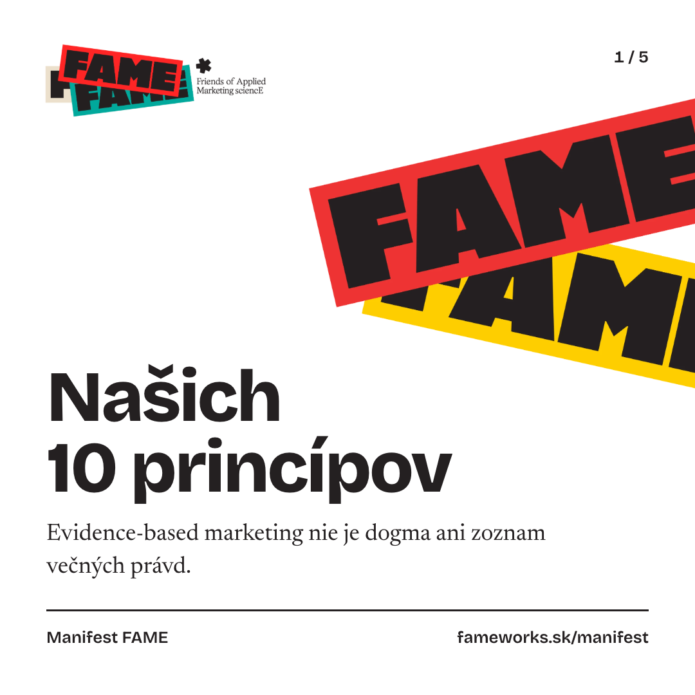
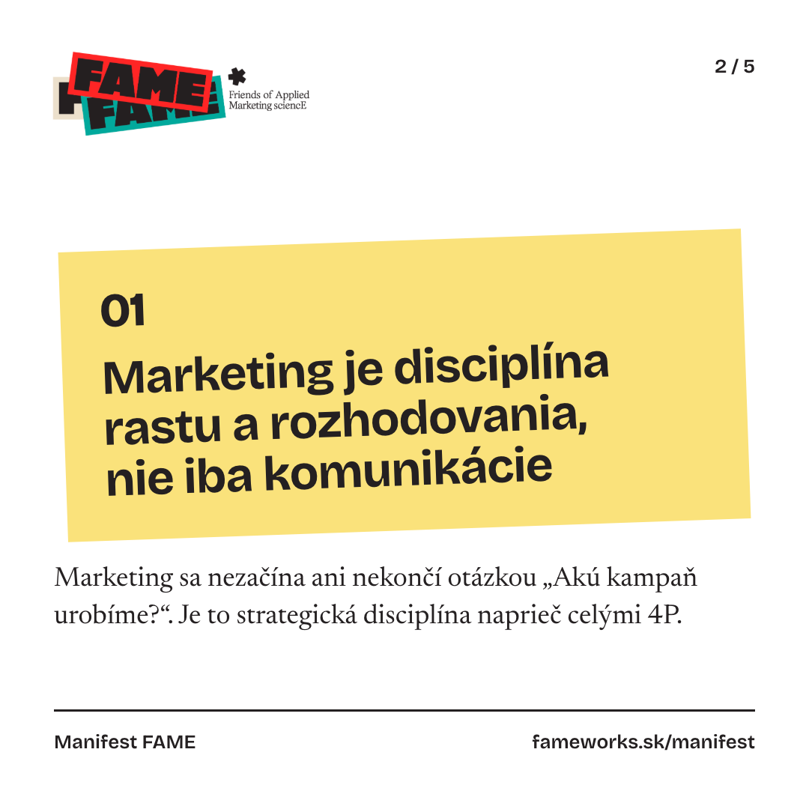
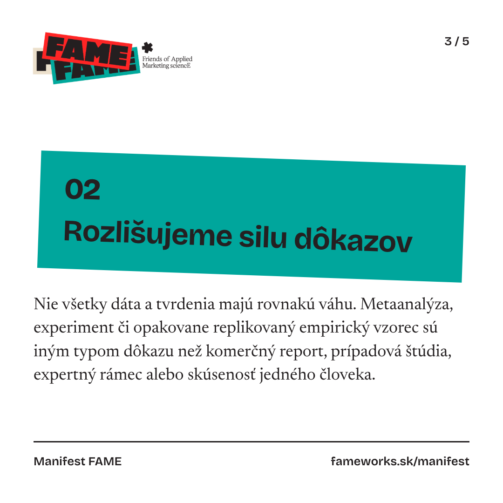
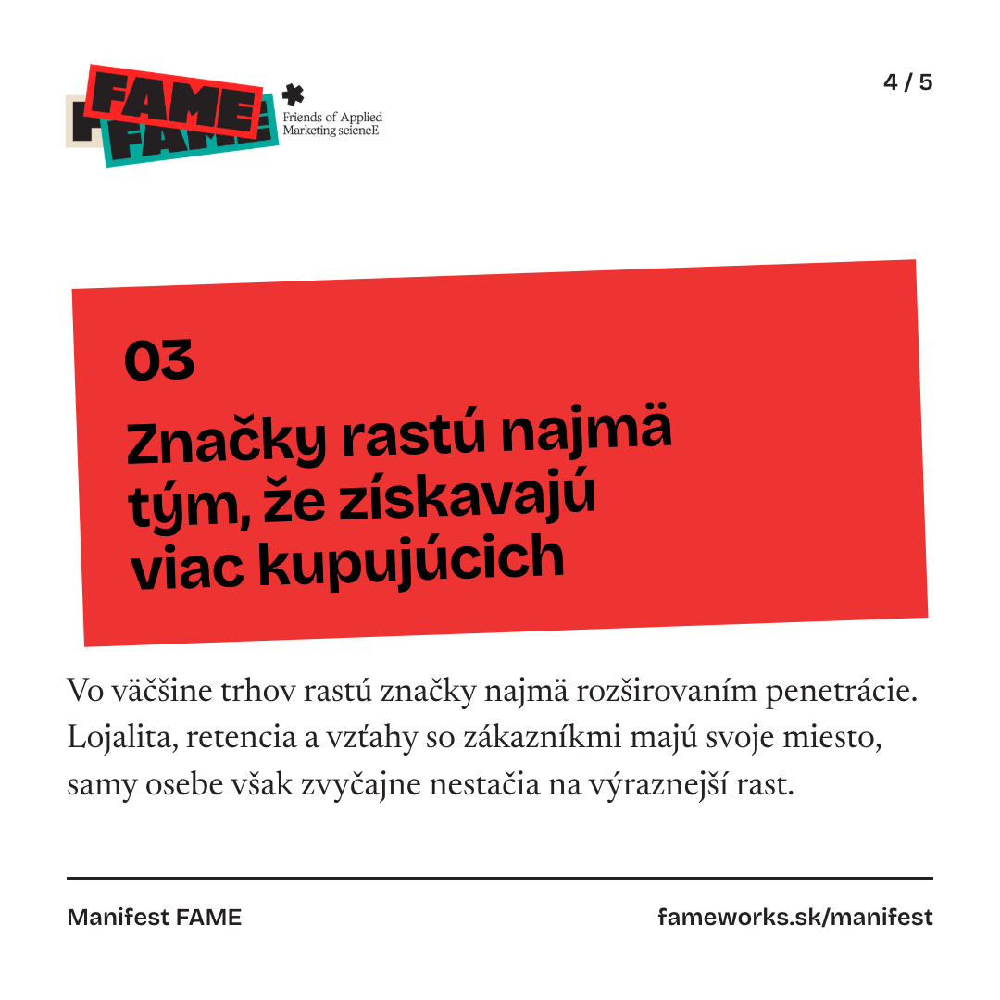
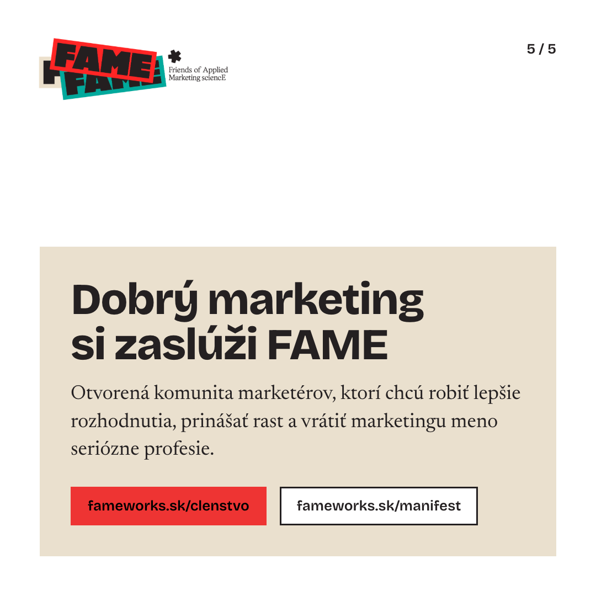

FAME, dizajnový systém v1
Obsah na LinkedIn a Instagram v jazyku webu fameworks.sk. Plátno 1080 px, hranaté naklonené dlaždice ako na logu, Bricolage Grotesque na nadpisy, Newsreader na prózu. Pravidlá sú v DESIGN.md, hodnoty v tokens.css.
Farby
Oficiálna paleta, zhodná s logom aj webom. Dlaždice iba červená, tyrkysová a žltá. Béžová a taupe iba ako pozadie bloku alebo panela, tan sa nepoužíva. Text na farbe je vždy tmavý.
--red#EE3433 · dlaždica, akcia
--teal#00A69C · dlaždica
--yellow#FAE27B · dlaždica
--beige#EAE0CE · blok, panel
--taupe#BFB2AC · krátky panel
--ink#242021 · text, linky
--paper#ffffff · plátno
--muted#645f60 · sekundárny text
Typografia
Skutočná veľkosť pre plátno 1080 px; na telefóne sa zobrazí približne na tretinu. Nič menšie ako 24 px.
Display 112 · 800Našich 10 princípov
Title 80 · 800Dobrý marketing si zaslúži FAME
Subtitle 64 · 700Rozlišujeme silu dôkazov
Body 36 · NewsreaderNie všetky dáta a tvrdenia majú rovnakú váhu.
Meta 26 · 600fameworks.sk/manifest
Dlaždice
Naklonené obdĺžniky z loga, bez zaoblenia a tieňa. Náklon 2° striedavo proti a v smere hodinových ručičiek, farby v cykle žltá, tyrkysová, červená; susedné dlaždice nikdy rovnakou farbou.
01Rozlišujeme silu dôkazov
02Rozlišujeme silu dôkazov
03Rozlišujeme silu dôkazov
Komponenty
URL kapsula je hranaté tlačidlo z webu: červená pre hlavnú akciu (jedna na stranu), inak obrysová. Panel faktov a päta s ink linkou.
fameworks.sk/clenstvofameworks.sk/manifest
- Termín
- TBA
- Lístky
- inviton.eu
01
Nájde relevantný výskum k téme, ktorú riešite
Dlaždica s popisom (.f-tile__head, .f-tile__text), dve na strane .slide--pair.
Logo a obrazy
Logo v pôvodnej podobe, iba na bielom plátne (PNG má nepriehľadné biele pozadie). Sticker art na titulku, vybieha za pravý okraj. Fotka zo stretnutia bez textu cez ľudí. Žiadne generované obrázky.
Rozloženia
Šablóny sú v templates/, náhľady obnovíš príkazom npm run render:system.
A: dlaždice (carousel 1080 × 1080)
Titulka so sticker art, obsahové strany s dlaždicou a citáciou zo zdroja, záver s béžovým blokom a URL kapsulami.





B: podujatie (4:5, 1080 × 1350)
Termín v naklonenej dlaždici ako hlavný vizuál, názov, text, panel faktov a červená URL.